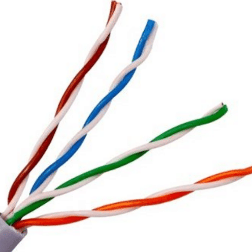
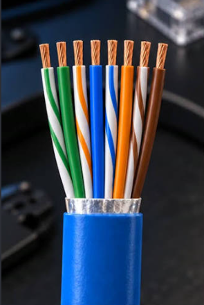
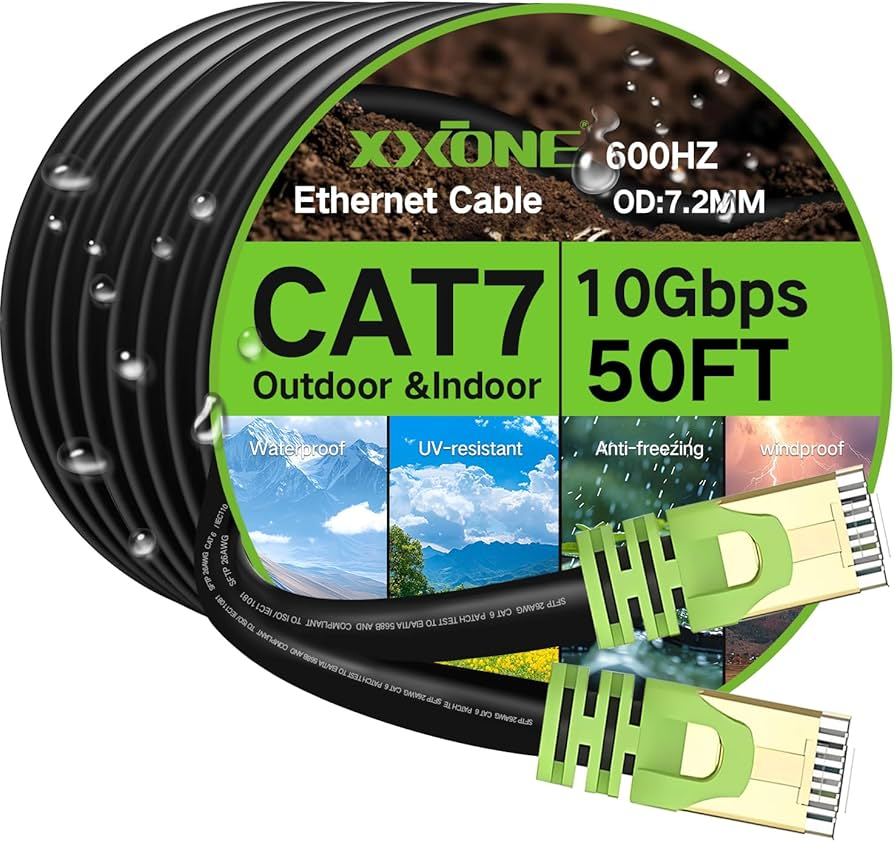
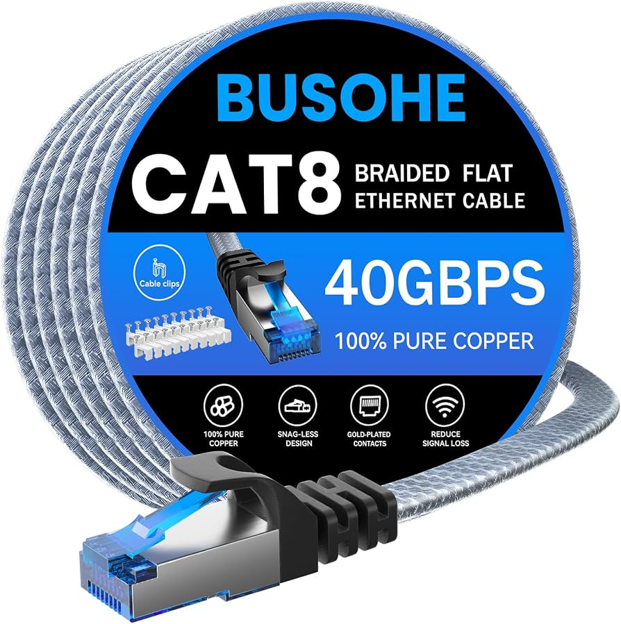
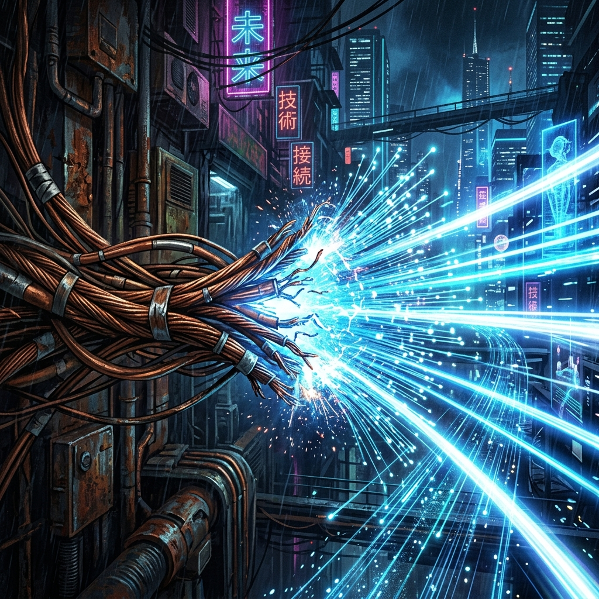
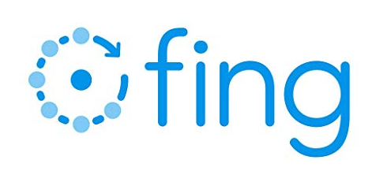
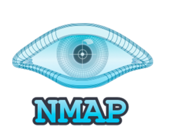

REDES DE COMPUTADORES
Aula 06: CABOS, IPs E MACs
Professor Jhones Sena
EVOLUÇÃO DOS
CABOS DE REDE
Do legado Cat5 de 100 Mbps com 2 pares ativos à ultravelocidade de 40 Gbps no Cat8 para data centers modernos, incluindo Endereçamento Físico e Lógico.
Cat5 e os Pares Físicos
O Padrão 100BASE-TX
O cabo Cat5 tradicional possui 4 pares trançados (8 vias), mas opera usando apenas 2 pares ativos (pinos 1, 2, 3 e 6) para trafegar 100 Mbps em 100 MHz.
Os outros dois pares ficavam ociosos ou serviam para ramais telefônicos e PoE preliminar. Com o avanço das aplicações, surgiu a necessidade de usar toda a estrutura de cobre.

O que é Mbps e Gbps?
A Teoria (Taxa de Transferência)
Mbps significa Megabits por segundo (e Gbps é Gigabits por segundo).
É a medida de quantidade de dados que consegue passar pelo cabo a cada segundo. Quanto maior o valor, mais rápido o download e upload.
Exemplo Prático: A Rodovia
Imagine uma rodovia. A velocidade em Mbps é o número de faixas da pista.
- Uma pista de 100 Mbps (Cat5) é uma rodovia de pista simples.
- Uma conexão de 10 Gbps (Cat6a) é uma mega-rodovia de 100 faixas.
Mais faixas = mais carros (dados) passando ao mesmo tempo sem engarrafar!
O que é MHz?
A Teoria (Largura de Banda Física)
MHz significa Megahertz. Em cabos, refere-se à frequência máxima de sinal elétrica que o cabo suporta sem que o sinal se distorça.
É a capacidade física do cabo de vibrar/oscilar a corrente por segundo.
Exemplo Prático: Limite e Asfalto
Voltando à nossa rodovia, o MHz é o limite de velocidade e a qualidade do asfalto.
- Um cabo de 100 MHz (Cat5) é uma estrada esburacada: se os carros correrem demais, batem.
- Um cabo de 2.000 MHz (Cat8) é uma pista de Fórmula 1!
Os dados podem "correr" e "pulsar" muito mais rápido sem sofrer acidentes (interferência).
Pilares do Desempenho
Frequência (MHz)
Determina a taxa máxima de oscilações e ciclos de sinal suportados por segundo sem gerar distorção ou perda grave de pacotes.
Pilares do Desempenho
Crosstalk & Ruído
A interferência eletromagnética entre condutores vizinhos é mitigada pelo passo do trançamento e por blindagens metálicas.
Pilares do Desempenho
Uso dos 4 Pares
O salto do Fast Ethernet para o Gigabit exigiu o chaveamento de transmissão full-duplex simultânea nas 8 vias metálicas.
Cat5e (Enhanced)
Manteve os 100 MHz nominais, mas revolucionou a arquitetura de sinalização de dados:
1000BASE-T
Utilização ativa de todos os 4 pares de condutores simultaneamente.
Transmissão Bidirecional
Cada par carrega 250 Mbps bidirecionalmente ao mesmo tempo.
Controle de Ruído
Especificações rigorosas de PS-NEXT e tecnologias de cancelamento de eco avançadas.
Custo-Benefício
Estabeleceu-se rapidamente como o padrão mínimo global para redes domésticas.
Cat6 (250 MHz)
250
MHz

Isolamento com Cruzeta Interna
Introduziu o elemento separador de plástico cruciforme (spline) que isola fisicamente cada um dos 4 pares.
Reduz drasticamente a diafonia e permite atingir até 10 Gbps em distâncias de até 55 metros (ou 1 Gbps nos 100 metros completos).
Cat6a: O Padrão Ouro
Opera a 500 MHz com suporte integral a 10 Gbps nos 100 metros completos. Tornou-se a escolha mandatória para cabeamento horizontal corporativo moderno.
Mantém compatibilidade com conectores RJ45 e elimina o Alien Crosstalk (ANEXT).

Cat7: Blindagem Extrema
Alcança 600 MHz e exige blindagem individual por par (S/FTP), oferecendo imunidade quase total contra EMI industrial.
Concebido originalmente para conectores GG45/TERA, foi em grande parte absorvido pelo avanço tecnológico do Cat6a e Cat8.

Cat8 e a Fronteira 40G
Desempenho Extremo em 2 GHz
Desenvolvido para aplicações hiper-exigentes, suportando velocidades de 25 Gbps (25GBASE-T) e 40 Gbps (40GBASE-T) sobre par trançado de cobre.
Com frequência de até 2.000 MHz (2 GHz), seu comprimento de canal é limitado a 30 metros, focando exclusivamente na interconexão de switches e servidores dentro de racks em data centers (Top-of-Rack).

Critério de Escolha Prático
Adequar a categoria do cabo à real necessidade do projeto, priorizando a qualidade do material (cobre puro) em vez de comprar categorias exageradas ou cabos falsificados.
Cat5: Obsoleto e deve ser descartado.
Cat5e: Suficiente para a maioria das residências e conexões básicas de até 1 Gbps.
Cat6: O melhor equilíbrio de custo-benefício (ideal para redes 2.5 Gbps e NAS).
Cat6a: Recomendado para infraestruturas profissionais (10 Gbps garantidos).
Cat8: Desnecessário para uso comum, muito caro e alto índice de produtos falsificados.
Alerta: Cabos Baratos (CCA)
CCA vs 100% Cobre
O maior risco na compra não é a categoria, mas a composição. Cabos baratos costumam usar Alumínio Cobreado (CCA) em vez de cobre puro homologado.
Isso causa aquecimento, oxidação, oscilações de ping e perda de pacotes.
Execução Técnica
Ter um cabo de excelente categoria não resolve nada se a crimpagem for mal feita.
A terminação correta dos conectores é tão vital quanto o cabo em si.
Fibra Óptica
Quando a física do cobre encontra limites intransponíveis de distância, dissipação térmica e ruído eletromagnético...
A Fibra Óptica assume a liderança absoluta.

A Velocidade da Luz
Diferente do cobre, que conduz elétrons sujeitos a indução eletromagnética e resistência ôhmica, a fibra óptica guia fótons através de reflexão interna total em núcleos de vidro de sílica ultrapura.
O resultado é imunidade total contra ruídos EMI/RFI, latência ultrabaixa e capacidades que escalam de 10 Gbps a 800 Gbps por fibra através de multiplexação WDM.

Monomodo (SMF - OS1/OS2)
Longas Distâncias
Núcleo ultrafino de 9 µm por onde a luz laser viaja em um único modo óptico, eliminando a dispersão modal.
Ideal para longas distâncias: alcança de 10 km até mais de 80 km sem repetidores. É a espinha dorsal da Internet, operadoras de telecom e conexões metropolitanas.
Multimodo (MMF - OM3/4/5)
Data Centers e Backbones
Núcleo mais amplo de 50 µm otimizado para emissores VCSEL de baixo custo, permitindo múltiplos modos de propagação luminosa.
Projetada para distâncias de 100 a 400 metros em data centers e backbones de campus, suportando 40G, 100G e 400G com transceivers acessíveis.
Matriz Comparativa
| Categoria | Velocidade Máxima | Largura de Banda | Alcance Máximo |
|---|---|---|---|
| Cat5 | 100 Mbps | 100 MHz | 100 metros |
| Cat5e | 1 Gbps | 100 MHz | 100 metros |
| Cat6 | 10 Gbps | 250 MHz | 55 metros (10G) |
| Cat6a | 10 Gbps | 500 MHz | 100 metros |
| Cat7 | 10 Gbps | 600 MHz | 100 metros |
| Cat8 | 40 Gbps | 2.000 MHz | 30 metros |
| Fibra Multimodo (OM4/5) | 40G a 400 Gbps | GHz óptico (100% Imune) | 150 a 400 m |
| Fibra Monomodo (OS2) | 100G a 800G+ | Terahertz óptico (100% Imune) | 10 km a 80+ km |
Linha Temporal da Conectividade
1995: Cat5
Início da era Fast Ethernet com 100 Mbps em 2 pares de cobre.
2001: Cat5e
Gigabit universal aproveitando simultaneamente os 4 pares.
2008+: Cat6a/8
Fronteira do cobre de 10G a 40G sob severo limite de distância.
Presente: Fibra Óptica
De 100G a 800G guiados por fótons sem degradação por ruído.
🏠 Residências e Escritórios
Padrão Recomendado: Cat6 UTP
Oferece o melhor equilíbrio entre flexibilidade física, custo acessível e suporte pleno a links modernos de internet de até 1 Gbps.
🏢 Projetos Corporativos
Padrão Recomendado: Cat6a Blindado
Adote o Cat6a (F/UTP ou STP) para assegurar compatibilidade nativa com pontos de acesso Wi-Fi 6E/7 e links de 10 GbE pelos próximos 15 anos.
💾 Data Centers
Padrão Recomendado: Cat8
Aplique exclusivamente para conexões diretas entre switches e servidores no mesmo gabinete (Top-of-Rack), onde o limite de 30 metros é estritamente respeitado.
Câmeras IP em Armazém
Um projetista precisa instalar 40 câmeras de segurança IP no teto de um armazém corporativo, onde não existem tomadas elétricas próximas aos pontos de montagem. Qual tecnologia física é a mais recomendada?
Duto Vertical de 160 Metros
Em um edifício comercial de 12 andares, a equipe de TI deve conectar switches do térreo até o último andar (160 metros). Por que o cabo de rede de cobre Cat6a não é viável?
Interligação de 100 Gbps
Para interligar switches a uma distância de 80 metros com tráfego extremo de 100 Gbps, qual mídia costuma oferecer a melhor relação custo/desempenho?
Conexão Externa Sujeita a Raios
Ao conectar dois prédios por tubulação externa a céu aberto, sujeita a descargas atmosféricas (raios), qual a melhor escolha?
Provedor FTTH (Internet de Bairro)
Em um provedor de internet que leva fibra até a casa dos assinantes (FTTH), qual padrão óptico é indispensável na rede de postes por longas distâncias?
Interligação de 15 km
Por que a fibra óptica monomodo é escolhida no lugar da multimodo para cruzar uma cidade inteira (15 km)?
Estações de Trabalho (Escritório)
Ao planejar as mesas de trabalho de um escritório corporativo moderno, por que se instala tipicamente cabos de cobre Cat6/Cat6a até os notebooks em vez de fibra óptica?
Alta Densidade no Rack
Em interconexões de muita densidade onde precisamos passar 8 pares ópticos em um espaço minúsculo, qual conector de fibra costuma ser usado?
Prevenção de EMI em Hospitais
Um hospital precisa interligar um switch próximo a uma máquina de ressonância magnética (alta radiação eletromagnética). Qual a escolha segura?
Um Dado Chegou. E agora?
O sinal viajou pelos fios e pela luz.
Mas como a rede sabe quem é cada dispositivo
e onde ele está?
🪪
Identidade
Quem sou eu?
📍
Localização
Onde estou?
A resposta: Endereçamento MAC e IP →
MAC versus IP
Endereço MAC
É como seu CPF
É imutável, único no mundo e acompanha o hardware para onde quer que ele vá.
"Quem eu sou"
Endereço IP
É como seu CEP (Endereço postal)
Muda dependendo de onde você está conectado (em casa, na escola, num café).
"Onde eu estou"
ENDEREÇAMENTO MAC
Media Access Control
É o endereço físico e único gravado na placa de rede (NIC) do dispositivo pelo fabricante (Burned-in Address).
00:1A:2B:3C:4D:5E
Formato Hexadecimal (48 bits)
Ele garante que os quadros de dados cheguem ao equipamento correto dentro da mesma rede local (LAN).
ENDEREÇAMENTO IP
Internet Protocol
É o endereço lógico e hierárquico que identifica a localização de um dispositivo em uma rede e permite o roteamento na internet.
IPv4 (32 bits)
192.168.1.10
IPv6 (128 bits)
2001:0db8::ff00:42:8329
1. IP, MAC e Detalhes
Exibe o "CPF" (Endereço Físico / MAC) e o "CEP" (Endereço IPv4, Gateway e DNS) de todas as placas de rede ativas e inativas:
O que observar no resultado:
- Endereço Físico: É o endereço MAC da interface.
- Endereço IPv4: O IP atribuído à máquina no momento.
- Gateway Padrão: O endereço IP do roteador da sua rede local.
2. Listar Endereços MAC
Mostra exclusivamente as placas instaladas e seus respectivos endereços físicos (MAC), sem os dados de IP (Direto ao ponto):
3. Tabela ARP
Mostra o mapeamento de quem é quem na sua rede local (qual "CPF" está associado a cada "CEP" com o qual seu computador conversou recentemente):
Para limpar e forçar o Windows a redescobrir os endereços físicos da rede:
4. Conexões Ativas e Portas
Exibe todas as conexões TCP/UDP ativas e portas abertas, associando o seu IP local ao IP de destino (os "CEPs" de origem e destino dos pacotes):
5. Info Avançada (WMIC)
Exibe o nome de fábrica do adaptador de rede junto com o endereço MAC gravado no chip:
6. Rota do Pacote (Trace)
Testando o roteamento de "CEPs": Mostra cada salto (roteador/endereço IP) pelo qual seus dados passam até chegar a um destino externo.
Mapeamento Automático
Vou disponibilizar um arquivo executável automático para vocês!
Para varrer a rede inteira, forçar o preenchimento da tabela ARP e salvar uma lista organizada com IP e MAC de todos os PCs ativos, basta rodar nosso script em lote (.bat).
Vamos ver o código fonte dele no próximo slide...
Script: escanear_rede.bat
@echo off
setlocal enabledelayedexpansion
set REDE=192.168.1
echo [1/2] Enviando ping para toda a faixa %REDE%.1 ate %REDE%.254...
for /L %%i in (1,1,254) do (
start /b ping -n 1 -w 150 %REDE%.%%i >nul
)
rem Aguarda 4 segundos para os pacotes retornarem e preencherem a tabela ARP
timeout /t 4 /nobreak >nul
echo.
echo [2/2] Gerando relatorio de dispositivos encontrados (IP vs MAC)...
echo ======================================================
echo IP MAC TIPO
echo ======================================================
arp -a | findstr /R "%REDE%\.[0-9]*"
echo ======================================================
echo Concluido!
pauseScanners de Rede (Interface Gráfica)
| Programa | Licença | Nível |
|---|---|---|
| Advanced IP Scanner | Grátis (Windows / Portátil) | Iniciante |
| Angry IP Scanner | Open Source (Multiplataforma) | Intermediário |
| Fing | Gratuito (Desktop e Mobile) | Iniciante |
| Nmap (Zenmap) | Open Source (Multiplataforma) | Avançado |
Advanced IP Scanner
O mais prático
Destaque: Não exige instalação; roda direto em versão portátil (.exe).
Como funciona: Detecta automaticamente a sub-rede em que sua placa está conectada e traz uma lista com IP, nome do computador, endereço MAC e o fabricante do hardware (ex: Intel, Realtek, Dell, Apple).
Angry IP Scanner
O mais leve e rápido
Destaque: Código aberto, sem anúncios e com varredura ultrarrápida configurável por threads.
Como funciona: Você define a faixa (ex: 192.168.1.1 a 192.168.1.254) e ele exibe o status de cada host (azul para ativo, vermelho para inativo) junto ao MAC e portas abertas.
Fing (Desktop / App)
O mais visual
Destaque: Possui uma base de dados de fabricantes e tipos de dispositivos muito refinada.
Como funciona: Além de listar IP e MAC, categoriza os dispositivos por ícones (smartphone, console, lâmpada inteligente, roteador), facilitando a identificação imediata de invasores.

Nmap (Zenmap)
Auditoria profunda
Destaque: Ferramenta profissional de linha de comando com interface gráfica oficial (Zenmap).
Como funciona: Varredura rápida de descoberta idêntica ao ping sweep:

A correta escolha da categoria física garante a longevidade e a estabilidade de toda a rede.
Engenharia de Redes & Cabeamento Estruturado